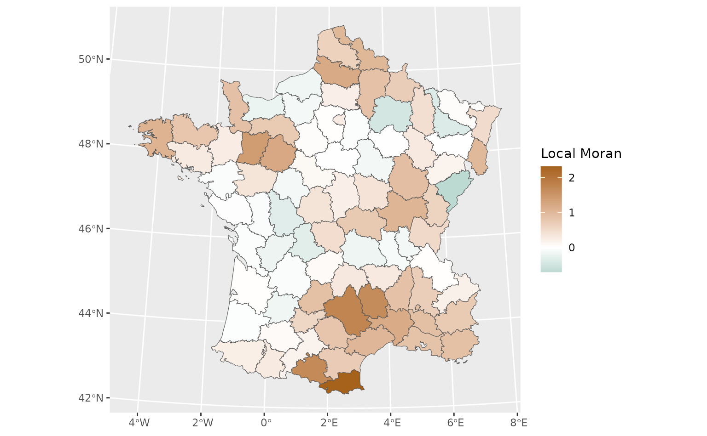
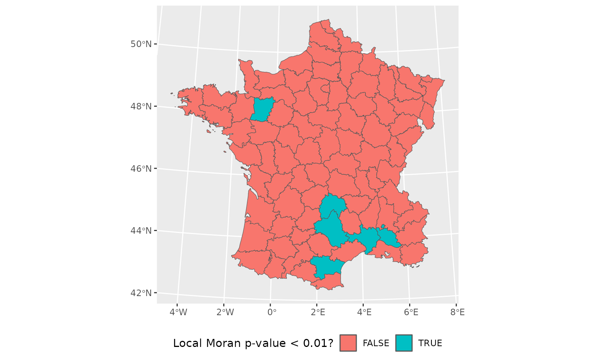

Calculating residual spatial autocorrelation
Source:vignettes/residual-autocorrelation.Rmd
residual-autocorrelation.RmdPerhaps the most famous sentence in spatial analysis is Tobler’s first law of geography, from Tobler (1970): “Everything is related to everything else, but near things are more related than distant things.” Spatial data often exhibits spatial autocorrelation, where variables of interest are not distributed at random but rather exhibit spatial patterns; in particular, spatial data is often clustered (exhibiting positive spatial autocorrelation) such that locations near each other are more similar than you’d expect if you had just sampled two observations at random.
For some data, this makes intuitive sense. The elevation at two neighboring points is extremely likely to be similar, as is the precipitation and temperature; these are variables whose values depend on (among other things) your position on the Earth. However, the first law is often over-interpreted. Pebesma and Bivand (2022) present an interesting discussion of the “first law”, quoting Olsson (1970) who says:
[T]he fact that the autocorrelations seem to hide systematic specification errors suggests that the elevation of this statement to the status of ‘the first law of geography’ is at best premature. At worst, the statement may represent the spatial variant of the post hoc fallacy, which would mean that coincidence has been mistaken for a causal relation.
Oftentimes, finding spatial autocorrelation in a variable is a result of that variable depending on other variables, which may or may not be spatially dependent themselves. For instance, house prices often exhibit positive autocorrelation, not because home prices are determined by their relative position on Earth, but because house prices rely upon other variables – school zones, median income, housing availability and more – which may themselves be spatially autocorrelated.
For that reason, it’s often worthwhile to look at the spatial autocorrelation of model residuals, to see if your model makes more errors in certain regions than you’d expect if errors were randomly arranged. That can help you to identify misspecifications in your model: seeing large autocorrelations in model residuals in an area might suggest that you’re missing variables in your model, and knowing which areas your model does worse in can help you to identify what those variables might be. Even if you can’t fix your model, it’s often useful to identify regions your model does notably worse in, so that you can communicate that to whoever winds up using your predictions.
Let’s walk through how we can use waywiser to find local indicators of spatial autocorrelation for a very simple model. First things first, let’s load a few libraries:
We’ll be working with the guerry data included in waywiser package. We’ll fit a simple linear model relating crimes against persons with literacy, and then generate predictions from that model. We can use ww_local_moran_i() to calculate the local spatial autocorrelation of our residuals at each data point:
guerry %>%
mutate(pred = predict(lm(Crm_prs ~ Litercy, .))) %>%
ww_local_moran_i(Crm_prs, pred)
#> # A tibble: 85 × 3
#> .metric .estimator .estimate
#> <chr> <chr> <dbl>
#> 1 local_moran_i standard 0.530
#> 2 local_moran_i standard 0.858
#> 3 local_moran_i standard 0.759
#> 4 local_moran_i standard 0.732
#> 5 local_moran_i standard 0.207
#> 6 local_moran_i standard 0.860
#> 7 local_moran_i standard 0.692
#> 8 local_moran_i standard 1.69
#> 9 local_moran_i standard -0.0109
#> 10 local_moran_i standard 0.710
#> # ℹ 75 more rowsIf you’re familiar with spdep, you can probably guess that waywiser is doing something under the hood here to calculate which of our observations are neighbors, and how to create spatial weights from those neighborhoods. And that guess would be right – waywiser is making use of two functions, ww_build_neighbors() and ww_build_weights(), in order to automatically calculate spatial weights for calculating metrics:
ww_build_neighbors(guerry)
#> Neighbour list object:
#> Number of regions: 85
#> Number of nonzero links: 420
#> Percentage nonzero weights: 5.813149
#> Average number of links: 4.941176
ww_build_weights(guerry)
#> Characteristics of weights list object:
#> Neighbour list object:
#> Number of regions: 85
#> Number of nonzero links: 420
#> Percentage nonzero weights: 5.813149
#> Average number of links: 4.941176
#>
#> Weights style: W
#> Weights constants summary:
#> n nn S0 S1 S2
#> W 85 7225 85 37.2761 347.6683These functions aren’t always the best way to calculate spatial weights for your data, however. As a result, waywiser also lets you specify your own weights directly:
weights <- guerry %>%
sf::st_geometry() %>%
sf::st_centroid() %>%
spdep::dnearneigh(0, 97000) %>%
spdep::nb2listw()
weights
#> Characteristics of weights list object:
#> Neighbour list object:
#> Number of regions: 85
#> Number of nonzero links: 314
#> Percentage nonzero weights: 4.346021
#> Average number of links: 3.694118
#>
#> Weights style: W
#> Weights constants summary:
#> n nn S0 S1 S2
#> W 85 7225 85 51.86738 348.7071
guerry %>%
mutate(pred = predict(lm(Crm_prs ~ Litercy, .))) %>%
ww_local_moran_i(Crm_prs, pred, weights)
#> # A tibble: 85 × 3
#> .metric .estimator .estimate
#> <chr> <chr> <dbl>
#> 1 local_moran_i standard 0.530
#> 2 local_moran_i standard 0.794
#> 3 local_moran_i standard 0.646
#> 4 local_moran_i standard 0.687
#> 5 local_moran_i standard 0.207
#> 6 local_moran_i standard 1.49
#> 7 local_moran_i standard 0.692
#> 8 local_moran_i standard 1.69
#> 9 local_moran_i standard -0.000610
#> 10 local_moran_i standard 0.859
#> # ℹ 75 more rowsOr as a function, which lets you use custom weights with other tidymodels functions like fit_resamples():
weights_function <- function(data) {
data %>%
sf::st_geometry() %>%
sf::st_centroid() %>%
spdep::dnearneigh(0, 97000) %>%
spdep::nb2listw()
}
guerry %>%
mutate(pred = predict(lm(Crm_prs ~ Litercy, .))) %>%
ww_local_moran_i(Crm_prs, pred, weights_function)
#> # A tibble: 85 × 3
#> .metric .estimator .estimate
#> <chr> <chr> <dbl>
#> 1 local_moran_i standard 0.530
#> 2 local_moran_i standard 0.794
#> 3 local_moran_i standard 0.646
#> 4 local_moran_i standard 0.687
#> 5 local_moran_i standard 0.207
#> 6 local_moran_i standard 1.49
#> 7 local_moran_i standard 0.692
#> 8 local_moran_i standard 1.69
#> 9 local_moran_i standard -0.000610
#> 10 local_moran_i standard 0.859
#> # ℹ 75 more rowsProviding custom weights also lets us use ww_local_moran_i_vec() to add a column to our original data frame with our statistic, which makes plotting using our original geometries easier:
library(ggplot2)
weights <- ww_build_weights(guerry)
guerry %>%
mutate(
pred = predict(lm(Crm_prs ~ Litercy, .)),
.estimate = ww_local_moran_i_vec(Crm_prs, pred, weights)
) %>%
sf::st_as_sf() %>%
ggplot(aes(fill = .estimate)) +
geom_sf() +
scale_fill_gradient2(
"Local Moran",
low = "#018571",
mid = "white",
high = "#A6611A"
)
This makes it easy to see what areas are poorly represented by our model (which have the highest local Moran values), which might lead us to identify ways to improve our model or help us identify caveats and limitations of the models we’re working with.
Other functions in waywiser will allow you to calculate the p-value associated with spatial autocorrelation metrics. You can calculate these alongside the autocorrelation metrics themselves using yardstick::metric_set():
moran <- yardstick::metric_set(
ww_global_moran_i,
ww_global_moran_pvalue
)
guerry %>%
mutate(pred = predict(lm(Crm_prs ~ Litercy, .))) %>%
moran(Crm_prs, pred)
#> # A tibble: 2 × 3
#> .metric .estimator .estimate
#> <chr> <chr> <dbl>
#> 1 global_moran_i standard 4.12e- 1
#> 2 global_moran_pvalue standard 7.23e-10These functions can also be used on their own to help qualitatively identify regions of concern, which may be poorly represented by your model:
guerry %>%
mutate(
pred = predict(lm(Crm_prs ~ Litercy, .)),
.estimate = ww_local_moran_pvalue_vec(Crm_prs, pred, weights)
) %>%
sf::st_as_sf() %>%
ggplot(aes(fill = .estimate < 0.01)) +
geom_sf() +
scale_fill_discrete("Local Moran p-value < 0.01?") +
theme(legend.position = "bottom")
This can help identify new predictor variables or other promising refinements to a model during the iterative process of model development. You shouldn’t report p-values without other context as results of your model, but this approach can help qualitatively assess a model during the development process. To use these tests for inference, consider using functions from spdep directly; each autocorrelation function in waywiser links to the spdep function it wraps from its documentation.